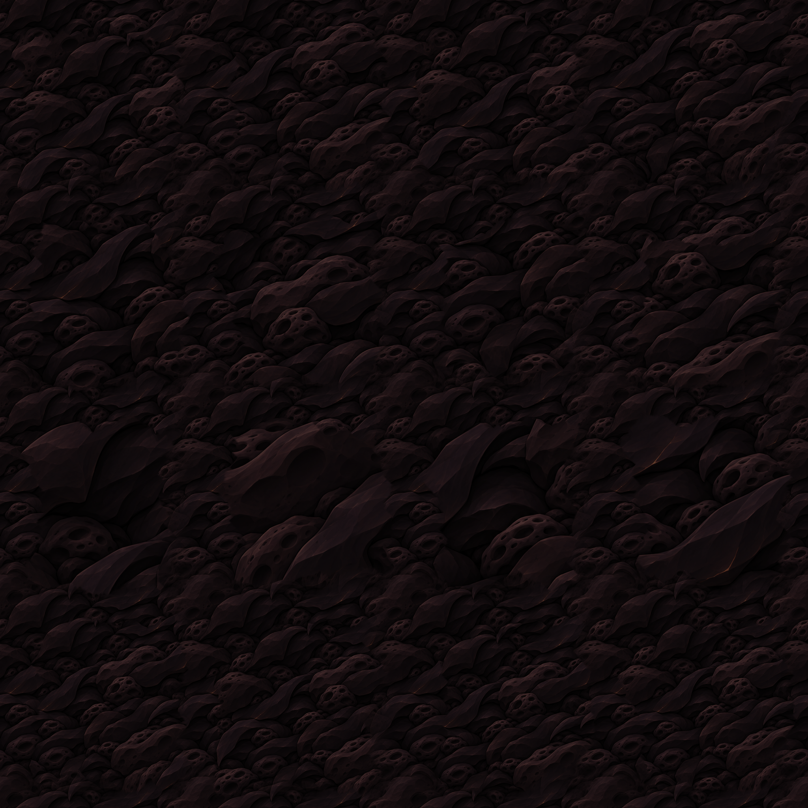

Cinderheart dimensional wall fill
16 freely alternating rock variants on a 512px grid. Small porous clusters, broad plates and large boulders give the dark wall interiors depth.
Six columns × four rows. Every tile boundary matches; variants stay upright to keep their edge profiles and lighting consistent.Toggle “Filled atlas” to compare with the previous black interiors. The original exterior transparency and openings are preserved.
Fill atlasFill tileset importReady-filled foregroundFilled foreground importImport notes
16 variants
